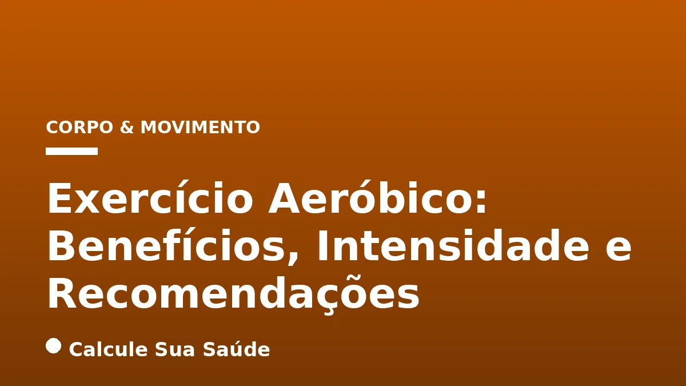

Aviso médico importante
Este conteúdo é educativo e informativo e não substitui a consulta, o diagnóstico ou o tratamento de um profissional de saúde. Em caso de sintomas, procure orientação médica.
Índice do Artigo
- 1. O Que É Exercício Aeróbico? Uma Visão Fisiológica
- 2. Os Inúmeros Benefícios do Exercício Aeróbico para a Saúde Integral
- 3. Classificando a Intensidade do Exercício Aeróbico: Leve, Moderada e Vigorosa
- 4. Recomendações Semanais de Atividade Física Aeróbica por Faixa Etária
- 5. Desmistificando o Exercício Aeróbico: Mitos Comuns vs. Evidências Científicas
- 6. O Cenário do Sedentarismo no Brasil: Dados Epidemiológicos e Impacto na Saúde Pública
- 7. Como Iniciar e Manter uma Rotina de Exercícios Aeróbicos
- 8. Exercício Aeróbico e a Saúde Metabólica: Prevenção e Controle de Doenças
- 9. A Importância da Combinação: Aeróbico e Treino de Força
- 10. Exercício Aeróbico para Grupos Específicos: Crianças, Idosos e Gestantes
- 11. Monitoramento da Saúde e Sinais de Alerta Durante o Exercício Aeróbico
- 12. O Papel da Nutrição e Hidratação no Desempenho Aeróbico
- 13. A Relação entre Exercício Aeróbico, Saúde Mental e Bem-Estar Cognitivo
- 14. Adaptações Fisiológicas do Corpo ao Exercício Aeróbico Regular
- 15. Exercício Aeróbico e Envelhecimento Saudável: Mantendo a Autonomia
- 16. Considerações Finais: O Exercício Aeróbico como Prescrição para a Vida
- 17. Perguntas frequentes
A busca por uma vida mais saudável e longeva é uma constante na sociedade moderna, e a atividade física emerge como um dos pilares mais robustos para alcançar esse objetivo. Dentre as diversas modalidades, o exercício aeróbico se destaca como uma ferramenta poderosa, reconhecida globalmente por seus múltiplos benefícios à saúde física e mental. Mas o que exatamente define o exercício aeróbico, qual a intensidade ideal e quanto tempo devemos dedicar a ele semanalmente para colher seus frutos?
Neste artigo aprofundado, o Calcule Sua Saúde, um portal dedicado à informação baseada em evidências, explora o universo do exercício aeróbico. Abordaremos desde sua definição e os mecanismos fisiológicos envolvidos, passando pelos vastos benefícios para a saúde cardiovascular, metabólica, óssea e mental, até as diretrizes de intensidade e volume recomendadas por organizações de saúde como a Organização Mundial da Saúde (OMS). Nosso objetivo é fornecer um guia completo e cientificamente embasado para que você possa integrar o exercício aeróbico de forma eficaz e segura em sua rotina.
Compreender a ciência por trás do movimento é o primeiro passo para transformar hábitos e investir proativamente em seu bem-estar. Desmistificaremos conceitos, apresentaremos dados epidemiológicos alarmantes sobre o sedentarismo no Brasil e ofereceremos orientações práticas para que você possa otimizar sua prática de exercícios aeróbicos, contribuindo significativamente para uma vida mais plena e com maior qualidade.
Em resumo
- Exercício aeróbico utiliza oxigênio para gerar energia, sendo fundamental para a saúde cardiorrespiratória e metabólica.
- Os benefícios abrangem desde a prevenção de doenças crônicas (como diabetes tipo 2 e hipertensão) até a melhora da saúde mental e controle de peso.
- A intensidade pode ser medida por frequência cardíaca, teste da conversa ou escala de percepção de esforço, sendo moderada e vigorosa as mais eficazes.
- Adultos devem realizar 150-300 minutos de atividade moderada ou 75-150 minutos de atividade vigorosa por semana, conforme a OMS.
- É crucial combinar exercícios aeróbicos com treino de força para resultados mais abrangentes e duradouros.
- O sedentarismo é um problema de saúde pública no Brasil, com quase metade dos adultos não atingindo as recomendações mínimas de atividade física.
1. O Que É Exercício Aeróbico? Uma Visão Fisiológica
O termo
2. Os Inúmeros Benefícios do Exercício Aeróbico para a Saúde Integral
A prática regular de exercícios aeróbicos transcende a mera queima de calorias, configurando-se como um pilar essencial para a saúde e o bem-estar em todas as fases da vida. Sua influência positiva se estende por diversos sistemas do corpo, oferecendo uma proteção abrangente contra uma vasta gama de doenças e melhorando significativamente a qualidade de vida. A ciência tem demonstrado consistentemente que a atividade física regular e adequada pode adicionar anos à vida e reduzir o risco de inúmeras doenças não transmissíveis e distúrbios.
Saúde Cardiovascular: O Coração em Ritmo Saudável
Um dos benefícios mais notáveis do exercício aeróbico é sua capacidade de otimizar a saúde cardiovascular. Ao engajar-se em atividades como caminhar, correr ou nadar, o coração, um músculo vital, é fortalecido. Isso resulta em uma melhora substancial da aptidão cardiorrespiratória, que é a capacidade do sistema circulatório e respiratório de fornecer oxigênio aos músculos durante o exercício. Um coração mais forte e eficiente bombeia mais sangue com menos esforço, reduzindo a pressão sobre as artérias e prevenindo condições como a hipertensão arterial. Além disso, o exercício aeróbico é uma medida preventiva comprovada contra uma ampla variedade de doenças cardiovasculares, incluindo doenças cardíacas coronarianas e acidente vascular cerebral (AVC). Pessoas já diagnosticadas com doenças cardíacas se beneficiam especialmente de atividades aeróbicas, sempre sob orientação médica, para melhorar a função cardíaca e a tolerância ao esforço.
Controle e Prevenção de Doenças Crônicas: Um Escudo Protetor
O exercício aeróbico desempenha um papel crucial na prevenção e no manejo de diversas doenças crônicas. Ele é um aliado poderoso no combate ao diabetes tipo 2, auxiliando no controle dos níveis de glicose no sangue e na melhora da sensibilidade à insulina. A prática regular também está associada à redução do risco de desenvolver alguns tipos de câncer, como os de mama e cólon. No contexto da obesidade, que é um fator de risco para muitas outras condições, o exercício aeróbico contribui significativamente para o controle do peso corporal, ajudando a queimar calorias e a reduzir o colesterol ruim (LDL), enquanto eleva o colesterol bom (HDL).
Saúde Mental e Cognitiva: Mente Sã em Corpo Ativo
Os benefícios do exercício aeróbico não se limitam ao corpo; eles se estendem profundamente à saúde mental e cognitiva. A atividade física regular é um potente redutor de sintomas de depressão e ansiedade, promovendo uma melhora geral do humor. Durante o exercício, o corpo libera endorfinas, neurotransmissores que atuam como analgésicos naturais e geram uma sensação de bem-estar e euforia. Além disso, estudos indicam que o exercício aeróbico pode melhorar a memória, a concentração e a saúde geral do cérebro, contribuindo para uma melhor qualidade do sono. É uma estratégia eficaz e natural para gerenciar o estresse e promover a resiliência mental.
Fortalecimento Muscular e Ósseo: Estrutura Sólida
Embora frequentemente associado à resistência, o exercício aeróbico também contribui para o fortalecimento dos ossos e músculos. Atividades como a caminhada rápida ou a corrida, que envolvem impacto controlado, estimulam a densidade óssea, ajudando a prevenir a osteoporose. Para as articulações, quando realizado corretamente e com técnica adequada, o exercício aeróbico pode ser benéfico, fortalecendo os músculos que as envolvem e mantendo a mobilidade articular. É importante, contudo, adaptar a intensidade e o tipo de exercício para evitar sobrecarga, especialmente em casos de lesões preexistentes ou condições como a artrose.
Melhora da Imunidade e Sinergia com o Treino de Força
Um sistema imunológico robusto é essencial para a defesa do corpo contra infecções e doenças. O exercício aeróbico regular contribui para a melhora da imunidade, tornando o organismo mais resistente. É importante ressaltar que a combinação de atividades aeróbicas com exercícios de força (como musculação ou treinamento funcional) oferece uma proteção ainda maior contra o risco de morte por todas as causas, doenças cardiovasculares, câncer e doenças crônicas do trato respiratório inferior, em comparação com a prática isolada de cada modalidade. Essa sinergia potencializa os benefícios e promove uma saúde mais completa e duradoura.
3. Classificando a Intensidade do Exercício Aeróbico: Leve, Moderada e Vigorosa
A intensidade do exercício aeróbico é um fator determinante para a eficácia do treinamento e para a obtenção dos benefícios desejados. Não se trata apenas de fazer, mas de fazer com o nível de esforço adequado para estimular as adaptações fisiológicas necessárias. A intensidade pode ser classificada em leve, moderada e vigorosa, e existem métodos práticos para monitorá-la.
Intensidade Moderada: O Equilíbrio Ideal
A intensidade moderada é caracterizada por um esforço perceptível, mas sustentável. Durante uma atividade de intensidade moderada, o coração bate mais acelerado do que em repouso, mas sem uma aceleração excessiva que cause desconforto. A respiração aumenta sutilmente, tornando-se mais profunda, porém ainda é possível conversar normalmente durante a atividade. Este é o princípio do
4. Recomendações Semanais de Atividade Física Aeróbica por Faixa Etária
As diretrizes globais para a prática de atividade física são estabelecidas por organizações de saúde renomadas, como a Organização Mundial da Saúde (OMS), e são alinhadas com as recomendações do Ministério da Saúde do Brasil. Essas diretrizes fornecem um roteiro claro sobre quanto exercício aeróbico é necessário para promover a saúde e prevenir doenças em diferentes grupos etários. É fundamental entender que
5. Desmistificando o Exercício Aeróbico: Mitos Comuns vs. Evidências Científicas
No universo da atividade física, muitos mitos e informações equivocadas podem surgir, dificultando a adesão e a otimização dos resultados. É crucial desvendar essas crenças populares à luz da ciência para garantir uma prática de exercício aeróbico eficaz e segura. O Calcule Sua Saúde se dedica a fornecer informações baseadas em evidências, e por isso, vamos abordar alguns dos mitos mais comuns.
Mito 1: Fazer apenas exercícios aeróbicos emagrece mais.
Ciência: Embora os exercícios aeróbicos sejam excelentes para a queima de calorias e, consequentemente, para o emagrecimento, a ciência demonstra que a combinação com o treino de força é mais eficaz para a perda de peso e a composição corporal. O treino de força aumenta a massa muscular, e o músculo é metabolicamente mais ativo do que a gordura, o que significa que um corpo com mais massa muscular queima mais calorias em repouso. Portanto, para otimizar a perda de peso e melhorar a saúde metabólica, a estratégia mais recomendada é integrar ambas as modalidades.
Mito 2: É necessário fazer muito tempo de exercício aeróbico para ter resultados.
Ciência: Este é um dos mitos mais desmotivadores. Estudos mostram que é possível obter benefícios significativos para a saúde com apenas 30 minutos de atividade física de intensidade moderada por dia, cinco vezes por semana, totalizando 150 minutos. Além disso, pequenas sessões de atividade física ao longo do dia, como blocos de 10 ou 15 minutos, também trazem benefícios acumulativos. O mais importante é começar e manter a constância, pois qualquer atividade é melhor do que nenhuma.
Mito 3: Exercício aeróbico é prejudicial para as articulações.
Ciência: Quando realizado corretamente, o exercício aeróbico pode ser extremamente benéfico para as articulações. Atividades de baixo impacto, como natação, ciclismo ou caminhada, fortalecem os músculos ao redor das articulações, melhoram a lubrificação articular e mantêm a mobilidade, o que é crucial para prevenir condições como a artrose. No entanto, é fundamental evitar exercícios de impacto intenso ou de alta sobrecarga se houver lesões prévias ou condições articulares específicas, e sempre buscar orientação profissional para adaptar a prática.
Mito 4: Exercício aeróbico deve ser feito sempre na mesma intensidade.
Ciência: Para obter os melhores resultados e promover adaptações fisiológicas contínuas, é importante variar a intensidade do exercício aeróbico. A alternância entre períodos de alta e baixa intensidade (como no treinamento intervalado, ou HIIT) ajuda a aumentar a queima de calorias, melhora a capacidade cardiovascular e evita o platô de desempenho. O corpo se adapta aos estímulos, e a variação da intensidade é uma forma eficaz de desafiá-lo constantemente.
Mito 5: Quanto mais suor, maior a perda de calorias/emagrecimento.
Ciência: O suor é um mecanismo natural de termorregulação do corpo, ou seja, serve para resfriá-lo. A quantidade de suor produzida depende de fatores como a temperatura ambiente, a umidade, o nível de hidratação e a genética individual, e não indica diretamente a quantidade de calorias queimadas ou a perda de gordura. Usar agasalhos excessivos para suar mais não acelera o emagrecimento e pode, inclusive, ser prejudicial, levando à desidratação e ao superaquecimento.
Mito 6: Você precisa malhar todos os dias para ter resultados.
Ciência: O segredo para resultados notáveis e sustentáveis é a constância e a recuperação. O corpo precisa de tempo para se recuperar, reparar os tecidos musculares e desenvolver força e condicionamento. Exercitar-se de 3 a 5 vezes por semana, seguindo as recomendações de intensidade e volume, já é suficiente para ver resultados significativos. O descanso é parte integrante do processo de treinamento.
Mito 7: Faz mal praticar esportes ou atividades físicas apenas nos finais de semana.
Ciência: Embora o ideal seja manter uma rotina de exercícios regulares ao longo da semana (pelo menos 3 vezes por semana), se o tempo permite apenas a prática nos finais de semana, é inegavelmente melhor fazer algo do que nada. A atividade física, mesmo que concentrada, ainda oferece benefícios para a saúde, especialmente para indivíduos que seriam completamente sedentários. Contudo, é importante ter cautela para não exagerar na intensidade ou volume em um único dia, o que poderia aumentar o risco de lesões.
| Mito Comum | O Que a Ciência Diz |
|---|---|
| Apenas aeróbico emagrece mais. | A combinação de aeróbico e força é mais eficaz para perda de peso e melhora da composição corporal. |
| Precisa de muito tempo para ter resultados. | 30 minutos por dia, 5 vezes por semana, já trazem benefícios significativos. Pequenas sessões também contam. |
| Aeróbico é prejudicial para as articulações. | Quando feito corretamente, fortalece músculos e mantém mobilidade articular. Evitar impacto intenso em caso de lesões. |
| Sempre na mesma intensidade. | Variar a intensidade (moderada/vigorosa) otimiza a queima de calorias e melhora a capacidade cardiovascular. |
| Quanto mais suor, mais emagrece. | Suor é termorregulação, não indicador direto de queima de gordura. Agasalhos podem causar desidratação. |
| Precisa malhar todos os dias. | 3 a 5 vezes por semana é suficiente. O descanso é crucial para recuperação e desenvolvimento. |
| Malhar só no fim de semana faz mal. | É melhor fazer algo do que nada, mas o ideal é a regularidade. Cuidado com excessos para evitar lesões. |
6. O Cenário do Sedentarismo no Brasil: Dados Epidemiológicos e Impacto na Saúde Pública
A inatividade física não é apenas uma questão individual de estilo de vida; ela representa um problema de saúde pública global com sérias implicações para a morbidade e mortalidade. No Brasil, a situação é particularmente preocupante, com dados que acendem um alerta sobre a necessidade urgente de políticas e ações que promovam a atividade física em todas as esferas da sociedade.
A Organização Mundial da Saúde (OMS) estima que até 5 milhões de mortes por ano poderiam ser evitadas globalmente se a população fosse mais ativa. Essa estatística sublinha a magnitude do impacto do sedentarismo na saúde mundial. Globalmente, um em cada quatro adultos e quatro em cada cinco adolescentes não praticam atividade física suficiente, o que demonstra uma crise de inatividade que atravessa idades e culturas.
No Brasil, o cenário é ainda mais desafiador. Dados da OMS indicam que o país está acima da média mundial de inatividade física, com 40% a 49% dos adultos não atingindo o mínimo recomendado de atividade física, enquanto a média global é de 31%. Levantamentos da OMS nos últimos 15 anos apontam que praticamente um em cada dois adultos (47%) no Brasil não faz atividades físicas suficientemente. Essa proporção alarmante reflete um estilo de vida cada vez mais sedentário, impulsionado por fatores como a urbanização, o avanço tecnológico e a falta de infraestrutura adequada para a prática de exercícios.
A Pesquisa Nacional de Saúde (PNS) de 2019, realizada pelo Ministério da Saúde, corrobora esses dados, revelando que 59,5% dos adultos brasileiros eram inativos fisicamente, e apenas 26,4% eram fisicamente ativos no tempo livre. Essa disparidade entre a inatividade e a atividade no tempo livre sugere que, mesmo quando há oportunidades, muitos brasileiros não as aproveitam para se movimentar. Entre os idosos (a partir de 65 anos), a taxa de inatividade é ainda mais elevada, atingindo sete em cada 10 indivíduos, o que é particularmente preocupante dada a importância da atividade física para a manutenção da autonomia e prevenção de quedas nessa faixa etária.
As consequências do sedentarismo são diretas e graves. A inatividade física está intrinsecamente associada ao desenvolvimento e agravamento de diversas doenças crônicas não transmissíveis, como infarto, hipertensão, diabetes, sobrepeso e obesidade. Essas condições, por sua vez, representam uma carga significativa para o sistema de saúde e para a qualidade de vida da população. Reverter essa tendência exige um esforço conjunto de governos, comunidades, profissionais de saúde e indivíduos, promovendo a conscientização e facilitando o acesso a ambientes e oportunidades para a prática regular de atividade física.
7. Como Iniciar e Manter uma Rotina de Exercícios Aeróbicos
Iniciar uma rotina de exercícios aeróbicos pode parecer desafiador, especialmente para quem está saindo do sedentarismo. No entanto, com planejamento e consistência, é possível integrar a atividade física de forma prazerosa e sustentável na vida diária. O segredo está em começar devagar, ouvir o corpo e progredir gradualmente.
Dicas para Começar: Pequenos Passos, Grandes Mudanças
- Comece Leve: Se você é iniciante, opte por atividades de intensidade leve a moderada, como caminhadas curtas, natação leve ou ciclismo em ritmo tranquilo. O objetivo inicial é criar o hábito e adaptar o corpo ao movimento.
- Defina Metas Realistas: Não tente fazer tudo de uma vez. Comece com 15 a 20 minutos de atividade, três vezes por semana, e aumente gradualmente a duração e a frequência. Lembre-se das recomendações da OMS como um objetivo a ser alcançado ao longo do tempo.
- Escolha Atividades Prazerosas: A chave para a constância é gostar do que você faz. Experimente diferentes modalidades – dança, caminhada em parques, aulas de ginástica, natação – até encontrar aquelas que mais te agradam.
- Integre ao Dia a Dia: Procure oportunidades para se movimentar. Use escadas em vez do elevador, estacione o carro um pouco mais longe, faça pequenas pausas para alongar ou caminhar durante o trabalho.
8. Exercício Aeróbico e a Saúde Metabólica: Prevenção e Controle de Doenças
A saúde metabólica é um conceito abrangente que se refere à eficiência com que o corpo processa e utiliza energia. O exercício aeróbico desempenha um papel central na manutenção e melhoria dessa saúde, sendo uma ferramenta poderosa na prevenção e no controle de diversas doenças metabólicas que afetam milhões de pessoas globalmente, como o diabetes tipo 2, a obesidade e a dislipidemia (alterações nos níveis de colesterol e triglicerídeos).
Regulação da Glicose e Sensibilidade à Insulina
Um dos mecanismos mais importantes pelos quais o exercício aeróbico beneficia a saúde metabólica é a sua capacidade de regular os níveis de glicose no sangue e melhorar a sensibilidade à insulina. Durante a atividade física, os músculos utilizam a glicose como fonte de energia. Esse processo ajuda a remover o excesso de glicose da corrente sanguínea, reduzindo os picos de açúcar após as refeições. Além disso, o exercício regular aumenta a sensibilidade das células à insulina, o hormônio responsável por transportar a glicose do sangue para as células. Uma maior sensibilidade à insulina significa que o corpo precisa produzir menos insulina para manter os níveis de glicose sob controle, o que é crucial na prevenção e no manejo do diabetes tipo 2 e da resistência à insulina.
Controle do Peso Corporal e Composição Corporal
O exercício aeróbico é um componente fundamental em qualquer estratégia de controle de peso. Ele promove a queima de calorias, o que, combinado com uma alimentação equilibrada, contribui para o balanço energético negativo necessário para a perda de peso. Além da redução do peso total, o exercício aeróbico ajuda a diminuir a gordura corporal, especialmente a gordura visceral, que é a gordura acumulada ao redor dos órgãos abdominais e está fortemente associada a um maior risco de doenças metabólicas e cardiovasculares. A melhora da composição corporal, com redução da gordura e manutenção da massa magra, é um dos pilares para uma saúde metabólica robusta.
Perfil Lipídico e Saúde Cardiovascular
A prática regular de exercícios aeróbicos tem um impacto positivo significativo no perfil lipídico, ou seja, nos níveis de gorduras no sangue. Ele ajuda a reduzir os níveis de colesterol LDL (o
9. A Importância da Combinação: Aeróbico e Treino de Força
Embora o exercício aeróbico ofereça uma vasta gama de benefícios para a saúde, a ciência é clara: a combinação com o treino de força potencializa os resultados e proporciona uma proteção mais completa e abrangente ao organismo. A sinergia entre essas duas modalidades de exercício é a chave para otimizar a saúde geral, o desempenho físico e a longevidade.
Benefícios Complementares e Abrangentes
O exercício aeróbico foca principalmente na melhora da aptidão cardiorrespiratória, na resistência e na eficiência do sistema cardiovascular. Ele fortalece o coração, melhora a circulação sanguínea e aumenta a capacidade do corpo de utilizar oxigênio. Por outro lado, o treino de força, como a musculação ou o treinamento funcional, concentra-se no desenvolvimento da massa muscular, força, potência e densidade óssea.
Quando combinados, esses benefícios se complementam de maneira poderosa:
- Melhora da Composição Corporal: Enquanto o aeróbico queima calorias e ajuda na perda de gordura, o treino de força aumenta a massa muscular. Um corpo com mais músculos tem um metabolismo basal mais elevado, o que significa que queima mais calorias mesmo em repouso, otimizando a perda de peso e a manutenção de um peso saudável.
- Saúde Óssea Reforçada: O treino de força é particularmente eficaz na prevenção da osteoporose, pois o estresse mecânico sobre os ossos estimula o aumento da densidade óssea. O aeróbico, especialmente o de impacto, também contribui, mas a força é crucial.
- Prevenção de Lesões: Músculos fortes e equilibrados, desenvolvidos pelo treino de força, oferecem maior suporte às articulações e à coluna, reduzindo o risco de lesões durante as atividades diárias e até mesmo durante o próprio exercício aeróbico.
- Controle Metabólico Aprimorado: A massa muscular é o principal local de armazenamento de glicogênio e um tecido metabolicamente ativo que ajuda a regular os níveis de glicose no sangue. A combinação de aeróbico e força melhora ainda mais a sensibilidade à insulina e o controle glicêmico, sendo um fator protetor contra o diabetes tipo 2.
- Maior Autonomia e Qualidade de Vida: Para idosos, a combinação é vital. O treino de força previne a sarcopenia (perda de massa muscular relacionada à idade) e melhora o equilíbrio, reduzindo o risco de quedas. O aeróbico mantém a capacidade funcional e a independência.
- Benefícios Cardiovasculares Ampliados: Embora o aeróbico seja o carro-chefe para o coração, o treino de força também contribui para a saúde cardiovascular ao melhorar a pressão arterial e o perfil lipídico.
Recomendações da OMS
As diretrizes da OMS não apenas recomendam o exercício aeróbico, mas também enfatizam a inclusão de atividades de fortalecimento muscular. Para adultos, a recomendação é realizar atividades de fortalecimento muscular de intensidade moderada ou vigorosa que envolvam todos os principais grupos musculares em 2 ou mais dias por semana. Essa abordagem integrada garante que o corpo seja trabalhado de forma completa, promovendo saúde e bem-estar em múltiplos níveis.
Portanto, ao planejar sua rotina de exercícios, não se limite a uma única modalidade. Busque um equilíbrio entre o exercício aeróbico e o treino de força para maximizar os benefícios e construir um corpo mais forte, saudável e resistente.
10. Exercício Aeróbico para Grupos Específicos: Crianças, Idosos e Gestantes
As recomendações de exercício aeróbico não são universais e devem ser adaptadas às necessidades e capacidades de diferentes grupos populacionais. Crianças, adolescentes, idosos e mulheres grávidas ou no pós-parto possuem particularidades que exigem atenção especial para garantir a segurança e a eficácia da prática. As diretrizes da OMS fornecem orientações claras para cada um desses grupos.
Crianças e Adolescentes (5-17 anos)
Para crianças e adolescentes, a atividade física é crucial não apenas para a saúde física, mas também para o desenvolvimento cognitivo e social. A OMS recomenda uma média de 60 minutos de atividade física aeróbica de intensidade moderada a vigorosa por dia. É importante que essa atividade seja variada e envolva diferentes tipos de movimento. Além disso, a OMS sugere que, pelo menos 3 dias por semana, sejam incluídas atividades de intensidade vigorosa e aquelas que fortalecem músculos e ossos. Isso pode incluir brincadeiras ativas, esportes, corrida, natação ou aulas de educação física. O objetivo é promover um estilo de vida ativo desde cedo, estabelecendo hábitos saudáveis para o futuro.
Idosos (65 anos ou mais)
Para os idosos, a atividade física regular é fundamental para manter a autonomia, prevenir quedas e melhorar a qualidade de vida. As recomendações para adultos (150-300 minutos de atividade moderada ou 75-150 minutos de atividade vigorosa por semana) também se aplicam a este grupo, desde que as atividades sejam adequadas ao seu nível de condicionamento e saúde. No entanto, há um acréscimo importante: os idosos devem incluir atividades que foquem no equilíbrio e coordenação, além de fortalecimento muscular, em 3 ou mais dias por semana. Isso é vital para ajudar a prevenir quedas, que são uma das principais causas de lesões graves e perda de independência na terceira idade. Exemplos incluem tai chi, yoga, dança e exercícios com pesos leves ou faixas elásticas. É sempre aconselhável que idosos consultem um médico antes de iniciar um novo programa de exercícios.
Mulheres Grávidas e no Pós-parto
A atividade física durante a gravidez e no período pós-parto é benéfica tanto para a mãe quanto para o bebê, desde que seja realizada com acompanhamento profissional e sem contraindicações médicas. Mulheres grávidas e no pós-parto podem continuar ou iniciar atividades aeróbicas de intensidade moderada, totalizando pelo menos 150 minutos por semana. É importante adaptar a intensidade e o tipo de exercício conforme a progressão da gravidez e as condições individuais. Atividades de baixo impacto, como caminhada, natação e ciclismo estacionário, são frequentemente recomendadas. Além do aeróbico, a OMS também sugere a inclusão de exercícios de fortalecimento muscular e alongamento. A consulta com o obstetra e um educador físico especializado é indispensável para um plano de exercícios seguro e personalizado.
Em todos esses grupos, a mensagem principal é que
11. Monitoramento da Saúde e Sinais de Alerta Durante o Exercício Aeróbico
Embora o exercício aeróbico seja amplamente benéfico, é crucial praticá-lo com segurança e estar atento aos sinais que o corpo pode emitir. O monitoramento da saúde durante a atividade física e o reconhecimento de sinais de alerta são essenciais para prevenir lesões, evitar complicações e garantir que o exercício seja sempre uma fonte de bem-estar, e não de risco.
A Importância da Avaliação Médica Prévia
Antes de iniciar qualquer programa de exercícios, especialmente se você tem condições de saúde preexistentes, histórico de doenças cardiovasculares, é idoso ou está inativo há muito tempo, é fundamental realizar uma avaliação médica completa. Um profissional de saúde poderá identificar possíveis riscos, recomendar exames complementares e orientar sobre as atividades mais adequadas para o seu perfil. Esta etapa é crucial para personalizar o plano de exercícios e garantir que ele seja seguro e eficaz.
Sinais de Alerta Durante o Exercício
Durante a prática de exercício aeróbico, é importante estar atento a qualquer sintoma incomum. Alguns sinais de alerta indicam que você deve interromper a atividade imediatamente e procurar atendimento médico, se necessário:
- Dor no peito: Qualquer tipo de dor, pressão ou desconforto no peito, braços, pescoço, mandíbula ou costas, que possa indicar um problema cardíaco.
- Falta de ar severa: Uma dificuldade respiratória desproporcional ao esforço, que impede a fala ou causa sensação de sufocamento.
- Tontura ou desmaio: Sensação de vertigem, desequilíbrio ou perda de consciência.
- Palpitações ou arritmias: Batimentos cardíacos irregulares, muito rápidos ou muito lentos, ou sensação de que o coração está
12. O Papel da Nutrição e Hidratação no Desempenho Aeróbico
O exercício aeróbico é apenas uma parte da equação para uma saúde ótima. Para maximizar os benefícios e garantir um desempenho adequado, a nutrição e a hidratação desempenham papéis igualmente cruciais. A forma como você alimenta seu corpo antes, durante e depois do exercício impacta diretamente sua energia, recuperação e adaptações fisiológicas.
Nutrição Pré-Exercício: Combustível para o Desempenho
Antes de iniciar o exercício aeróbico, é essencial fornecer ao corpo o combustível necessário. Os carboidratos são a principal fonte de energia para atividades de resistência, pois são convertidos em glicose, que é utilizada pelos músculos. Uma refeição ou lanche rico em carboidratos complexos (como pão integral, aveia, frutas) consumido 1 a 3 horas antes do treino pode garantir que você tenha energia suficiente para sustentar o esforço. Evite alimentos ricos em gordura e fibras em excesso imediatamente antes do exercício, pois podem causar desconforto gastrointestinal. A quantidade e o tipo de alimento devem ser ajustados à duração e intensidade do treino, bem como à tolerância individual.
Hidratação: Essencial para Todas as Fases
A hidratação é vital em todas as etapas do exercício aeróbico. A desidratação, mesmo em níveis leves, pode comprometer o desempenho físico, aumentar a percepção de esforço e elevar o risco de exaustão pelo calor. Beber água antes, durante e depois do exercício é fundamental. A recomendação geral é beber cerca de 500 ml de água 2-3 horas antes do treino, e continuar a ingerir pequenos volumes (150-250 ml) a cada 15-20 minutos durante a atividade, especialmente em ambientes quentes ou durante exercícios prolongados. Para treinos muito longos (acima de 60 minutos) ou em condições de calor intenso, bebidas esportivas com eletrólitos podem ser benéficas para repor os minerais perdidos pelo suor e manter o equilíbrio hidroeletrolítico.
Nutrição Pós-Exercício: Recuperação e Reconstrução
Após o exercício aeróbico, o corpo precisa de nutrientes para se recuperar e reconstruir. A janela de recuperação, idealmente nas primeiras horas após o treino, é crucial para repor as reservas de glicogênio muscular e reparar os tecidos. Uma refeição ou lanche que combine carboidratos e proteínas é o ideal. Os carboidratos ajudarão a reabastecer o glicogênio, enquanto as proteínas fornecerão os aminoácidos necessários para a reparação e crescimento muscular. Exemplos incluem um sanduíche com pão integral e peito de frango, iogurte com frutas e granola, ou um shake de proteína com banana. A recuperação adequada é tão importante quanto o próprio treino para garantir a progressão e evitar o overtraining.
Em resumo, uma estratégia nutricional e de hidratação bem planejada é um complemento indispensável ao seu programa de exercícios aeróbicos, otimizando o desempenho, acelerando a recuperação e contribuindo para a sua saúde geral. Consulte um nutricionista para um plano alimentar personalizado que atenda às suas necessidades específicas e objetivos de treinamento.
13. A Relação entre Exercício Aeróbico, Saúde Mental e Bem-Estar Cognitivo
A conexão entre o corpo e a mente é inegável, e o exercício aeróbico serve como uma ponte poderosa para fortalecer essa relação. Além dos benefícios físicos bem documentados, a prática regular de atividades aeróbicas tem um impacto profundo e positivo na saúde mental e no bem-estar cognitivo, atuando como um antidepressivo natural, um ansiolítico e um impulsionador das funções cerebrais.
Redução do Estresse, Ansiedade e Depressão
Um dos efeitos mais imediatos e perceptíveis do exercício aeróbico é a redução do estresse. A atividade física funciona como um escape para a tensão acumulada, ajudando o corpo a processar e liberar hormônios do estresse, como o cortisol. Além disso, o exercício estimula a produção de endorfinas, neurotransmissores que promovem sensações de prazer e euforia, atuando como analgésicos naturais e elevadores de humor. Essa liberação de endorfinas é um dos motivos pelos quais muitas pessoas relatam uma sensação de bem-estar e relaxamento após o treino.
Para indivíduos que sofrem de ansiedade e depressão, o exercício aeróbico pode ser uma ferramenta terapêutica complementar eficaz. Ele ajuda a regular neurotransmissores como a serotonina e a noradrenalina, que estão envolvidos na regulação do humor. A prática regular também oferece uma oportunidade para sair de padrões de pensamento negativos, focar no presente e alcançar pequenas metas, o que pode aumentar a autoestima e a sensação de controle.
Melhora da Qualidade do Sono
A qualidade do sono é um pilar fundamental para a saúde mental e cognitiva. O exercício aeróbico regular contribui significativamente para a melhora do sono, ajudando a regular o ciclo circadiano e a promover um sono mais profundo e reparador. Noites bem dormidas estão associadas a uma melhor capacidade de concentração, humor mais estável e maior resiliência ao estresse. É importante, no entanto, evitar exercícios muito intensos próximo à hora de dormir, pois podem ter o efeito oposto devido à estimulação do corpo.
Funções Cognitivas e Saúde Cerebral
Os benefícios do exercício aeróbico se estendem à saúde do cérebro e às funções cognitivas. A atividade física aumenta o fluxo sanguíneo para o cérebro, o que melhora o fornecimento de oxigênio e nutrientes essenciais. Além disso, o exercício estimula a produção de fatores neurotróficos, como o BDNF (fator neurotrófico derivado do cérebro), que são cruciais para o crescimento e a sobrevivência dos neurônios, bem como para a neuroplasticidade – a capacidade do cérebro de formar novas conexões.
Esses mecanismos resultam em melhorias na memória, na capacidade de aprendizado, na concentração e na função executiva (planejamento, tomada de decisão). Para a prevenção de doenças neurodegenerativas, como o Alzheimer, o exercício aeróbico é considerado um fator protetor importante, ajudando a manter a saúde cerebral ao longo do envelhecimento.
Em suma, o exercício aeróbico é uma intervenção poderosa e acessível para promover a saúde mental e o bem-estar cognitivo. Integrá-lo à rotina é um investimento valioso não apenas para o corpo, mas também para a mente, proporcionando uma vida mais equilibrada, feliz e com maior clareza mental.
14. Adaptações Fisiológicas do Corpo ao Exercício Aeróbico Regular
O corpo humano é uma máquina adaptável, e a prática regular de exercício aeróbico desencadeia uma série de adaptações fisiológicas notáveis que otimizam o desempenho e promovem a saúde a longo prazo. Essas mudanças ocorrem em diversos sistemas, tornando o organismo mais eficiente na utilização de oxigênio e na produção de energia.
Sistema Cardiovascular: Coração Mais Forte e Eficiente
- Hipertrofia Cardíaca Fisiológica: O músculo cardíaco (miocárdio) se fortalece e aumenta de tamanho, especialmente o ventrículo esquerdo, resultando em um coração mais potente.
- Aumento do Volume Sistólico: A cada batimento, o coração consegue bombear uma maior quantidade de sangue. Isso significa que, em repouso e durante o exercício submáximo, a frequência cardíaca diminui, pois o coração não precisa bater tantas vezes para fornecer a mesma quantidade de sangue.
- Melhora da Vascularização: Há um aumento na densidade de capilares nos músculos, o que facilita o transporte de oxigênio e nutrientes para as células musculares e a remoção de resíduos metabólicos.
- Redução da Pressão Arterial: A elasticidade dos vasos sanguíneos melhora, e a resistência periférica diminui, contribuindo para a redução da pressão arterial em repouso.
Sistema Respiratório: Pulmões Mais Eficientes
- Aumento da Capacidade Pulmonar: Embora o tamanho dos pulmões não mude, a eficiência da troca gasosa melhora, permitindo uma maior captação de oxigênio e eliminação de dióxido de carbono.
- Fortalecimento dos Músculos Respiratórios: O diafragma e os músculos intercostais se fortalecem, tornando a respiração mais eficaz e menos fatigante.
Sistema Muscular e Metabólico: Otimização Energética
- Aumento da Densidade Mitocondrial: As mitocôndrias, as
15. Exercício Aeróbico e Envelhecimento Saudável: Mantendo a Autonomia
O envelhecimento é um processo natural que traz consigo diversas mudanças fisiológicas, muitas das quais podem impactar a qualidade de vida e a autonomia. No entanto, o exercício aeróbico regular emerge como uma das estratégias mais eficazes para mitigar os efeitos negativos do envelhecimento, promovendo um envelhecimento saudável e ativo. Manter-se fisicamente ativo na terceira idade é crucial para preservar a independência e desfrutar de uma vida plena.
Prevenção da Perda de Massa Muscular e Óssea
Com o avanço da idade, é comum observar uma perda gradual de massa muscular, um fenômeno conhecido como sarcopenia. Essa perda pode levar à fraqueza, diminuição da mobilidade e aumento do risco de quedas. Embora o treino de força seja o principal combatente da sarcopenia, o exercício aeróbico, especialmente quando combinado com atividades de fortalecimento, contribui para a manutenção da massa muscular e da força funcional. Além disso, atividades aeróbicas de impacto moderado, como a caminhada, ajudam a preservar a densidade óssea, prevenindo a osteoporose, uma condição que torna os ossos frágeis e suscetíveis a fraturas.
Melhora da Função Cardiovascular e Respiratória
O sistema cardiovascular e respiratório também sofre alterações com o envelhecimento, como a diminuição da elasticidade dos vasos sanguíneos e da capacidade pulmonar. O exercício aeróbico regular retarda essas degenerações, mantendo o coração e os pulmões mais eficientes. Isso se traduz em uma melhor aptidão cardiorrespiratória, permitindo que os idosos realizem atividades diárias com menos esforço e desfrutem de maior energia para o lazer e a interação social. A prevenção de doenças como a hipertensão e a aterosclerose é um benefício adicional crucial.
Manutenção da Função Cognitiva e Saúde Mental
O exercício aeróbico tem um impacto significativo na saúde cerebral dos idosos. Ele aumenta o fluxo sanguíneo para o cérebro, estimula a neuroplasticidade e a produção de fatores neurotróficos, que são essenciais para a manutenção das funções cognitivas, como memória, atenção e raciocínio. A prática regular de atividade física também é um poderoso aliado na prevenção e no manejo de condições como a depressão e a ansiedade, que podem ser mais prevalentes na terceira idade. Ao promover o bem-estar mental, o exercício contribui para uma melhor qualidade de vida e um envelhecimento mais feliz.
Prevenção de Quedas e Manutenção da Autonomia
Um dos maiores desafios do envelhecimento é o risco de quedas, que podem levar a fraturas graves e perda de independência. O exercício aeróbico, especialmente quando complementado por atividades que trabalham equilíbrio, coordenação e força muscular (conforme recomendado pela OMS para idosos), é fundamental para prevenir quedas. Ao melhorar a força das pernas, a estabilidade postural e a capacidade de reação, os idosos se tornam mais seguros e confiantes em suas atividades diárias, mantendo sua autonomia e liberdade de movimento por mais tempo.
Em suma, o exercício aeróbico não é apenas uma opção, mas uma necessidade para um envelhecimento saudável. Ele permite que os idosos não apenas vivam mais, mas vivam melhor, com mais energia, menos dores, maior clareza mental e a capacidade de continuar desfrutando das atividades que amam.
16. Considerações Finais: O Exercício Aeróbico como Prescrição para a Vida
Ao longo deste artigo, exploramos as múltiplas facetas do exercício aeróbico, desde sua base fisiológica até seus vastos benefícios para a saúde física, mental e cognitiva. Reafirmamos que a atividade física regular não é um luxo, mas uma necessidade fundamental para a prevenção de doenças, a promoção do bem-estar e a garantia de uma vida mais longa e com maior qualidade.
As diretrizes da Organização Mundial da Saúde (OMS) e do Ministério da Saúde do Brasil são claras: a maioria dos adultos precisa de pelo menos 150 a 300 minutos de atividade aeróbica de intensidade moderada ou 75 a 150 minutos de intensidade vigorosa por semana, complementados por exercícios de fortalecimento muscular. Essas recomendações, embora pareçam ambiciosas para alguns, são totalmente alcançáveis e podem ser integradas ao dia a dia com planejamento e consistência.
O cenário do sedentarismo no Brasil, com quase metade da população adulta não atingindo os níveis mínimos de atividade física, é um lembrete contundente da urgência em mudar nossos hábitos. A inatividade física é um fator de risco modificável para uma série de doenças crônicas, e a boa notícia é que temos o poder de reverter essa tendência através do movimento.
Lembre-se que
17. Perguntas frequentes
O que é exercício aeróbico?
Exercício aeróbico é qualquer atividade física de intensidade baixa a alta que depende principalmente do oxigênio para gerar energia. Caracteriza-se por movimentos contínuos e rítmicos que envolvem grandes grupos musculares, como caminhada, corrida, natação e ciclismo.Quais são os principais benefícios do exercício aeróbico?
Os principais benefícios incluem melhora da saúde cardiovascular, controle e prevenção de doenças crônicas como diabetes tipo 2 e obesidade, redução do estresse e ansiedade, melhora do humor e da memória, fortalecimento muscular e ósseo, e aumento da imunidade.Como posso medir a intensidade do meu exercício aeróbico?
Você pode medir a intensidade pela frequência cardíaca (calculando sua FCM e mantendo entre 60-75% para moderada ou acima de 75% para vigorosa), pelo teste da conversa (consegue conversar facilmente para leve, com dificuldade para moderada, impossível para vigorosa) ou pela escala de percepção de esforço (RPE).Quanto tempo de exercício aeróbico devo fazer por semana?
A OMS recomenda que adultos façam pelo menos 150 a 300 minutos de atividade aeróbica de intensidade moderada, ou 75 a 150 minutos de intensidade vigorosa, ou uma combinação equivalente, distribuídos ao longo da semana.É verdade que só o exercício aeróbico emagrece mais?
Não, esse é um mito. Embora o aeróbico queime calorias, a combinação com o treino de força é mais eficaz para o emagrecimento e a melhora da composição corporal, pois o aumento da massa muscular acelera o metabolismo e otimiza a queima de gordura.O exercício aeróbico é prejudicial para as articulações?
Não, quando realizado corretamente, o exercício aeróbico pode ser benéfico para as articulações, fortalecendo os músculos ao redor e mantendo a mobilidade. É importante escolher atividades de baixo impacto se houver lesões prévias e sempre buscar orientação profissional.Qual a importância de combinar o exercício aeróbico com o treino de força?
A combinação oferece benefícios mais abrangentes, incluindo melhor composição corporal (perda de gordura e ganho de músculo), saúde óssea reforçada, prevenção de lesões, controle metabólico aprimorado e maior autonomia, especialmente para idosos. A OMS recomenda ambas as modalidades.Qual o cenário do sedentarismo no Brasil?
O Brasil apresenta altas taxas de inatividade física, com 40% a 49% dos adultos não atingindo o mínimo recomendado pela OMS. A Pesquisa Nacional de Saúde de 2019 mostrou que 59,5% dos adultos brasileiros eram inativos, e essa taxa é ainda maior entre os idosos.Leia também
Referências e Fontes
1. Organização Mundial da Saúde (OMS). Diretrizes da OMS para Atividade Física e Comportamento Sedentário. 2020. Disponível em: iris.who.int
2. Organização Pan-Americana da Saúde (OPAS/OMS). OMS lança novas diretrizes sobre atividade física e comportamento sedentário. 2020. Disponível em: paho.org
3. Tua Saúde. Atividade física como prescrição: a recomendação da OMS que ainda é ignorada por adultos sedentários. 2024. Disponível em: tuasaude.com
4. As Nações Unidas no Brasil. OMS lança novas diretrizes sobre atividade física e comportamento sedentário. 2020. Disponível em: brasil.un.org
5. TRG Fitness. Mitos e verdades sobre o treino aeróbico! Disponível em: trgfitness.com.br
6. Ativo. Descubra 5 mitos e verdades sobre os exercícios aeróbicos. Disponível em: vertexaisearch.cloud.google.com
7. Painel Obesidade. Brasil está acima da média mundial na inatividade física. Disponível em: painelobesidade.com.br
8. Ministério da Saúde (Brasil). Glossário: Atividades Físicas Aeróbicas. Disponível em: gov.br